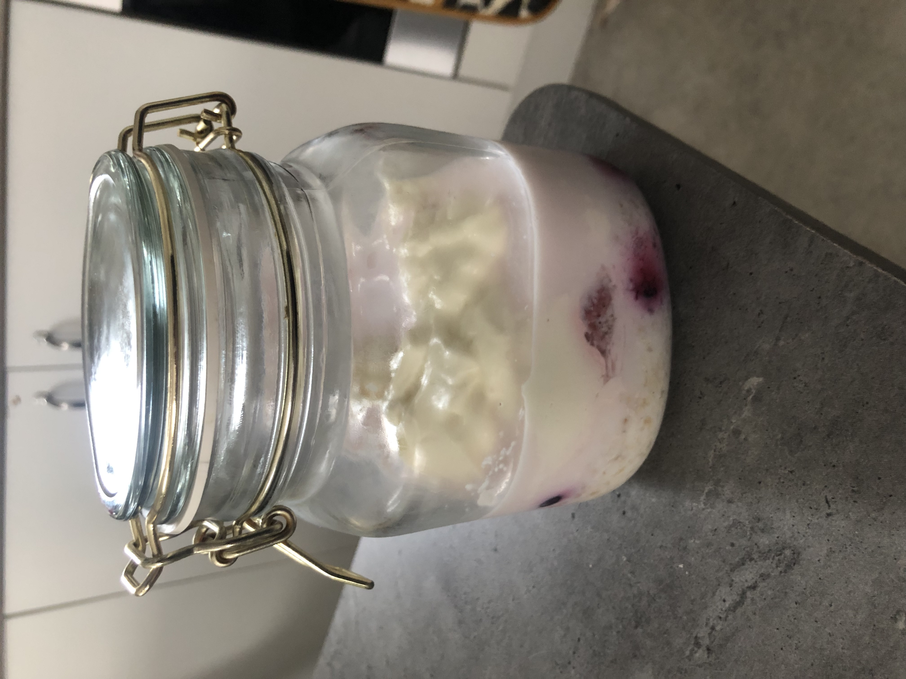

Overnight Oats

Description
Simple and easy to make for breakfast and lunch
Ingrediants
Servings: 1
- Oats 50g
- Frozen berries 100g
- Skyr Yoghurt 220g
- Milk 200ml
Steps:
- Add the porridge into a container or jar that holds at least 700ml
- Add the frozen berries
- Add the Skyr Yoghurt
- Add the milk
- Leave it for 6 hours in the fridge before eating